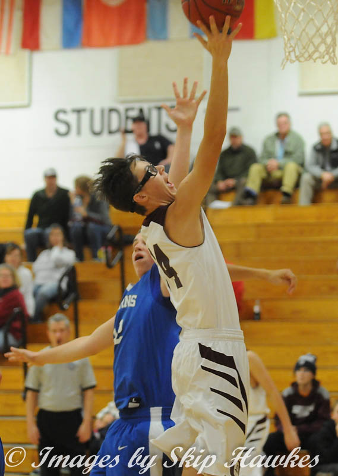

GOLF: Ryan only played golf during his junior and senior year. It was his least favorite sport out of the three and he wasn't very good at it.
BASKETBALL: Ryan played basketball all four years of high school with an even split of 2 years on JV, and 2 years on Varsity. Basketball was Ryan's favorite sport, and his senior year was his best year. He accomplished his three goals of:
TENNIS: Ryan played tennis during his junior and senior year. Both years he played doubles and finished with a career record of 27-2. His junior year, his team finished as the Northern Maine Class C runner ups, while during his senior year his team secured Northern Maine Class C State Champs and State of Maine Class C runner up!
